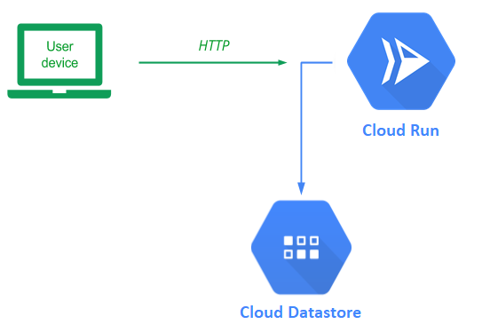
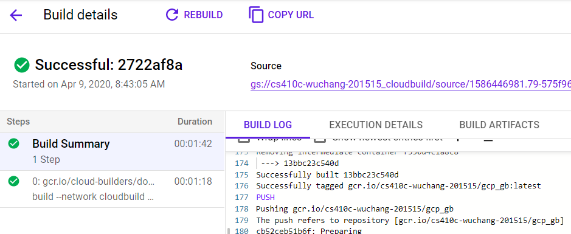
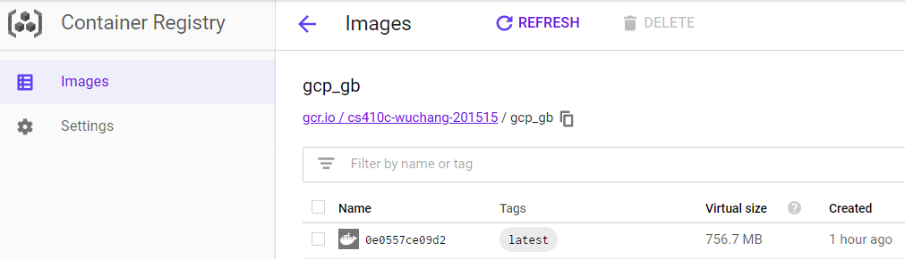
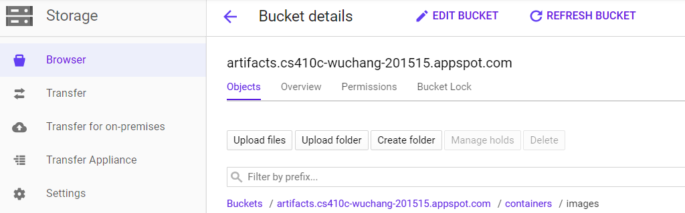
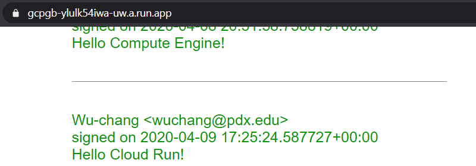
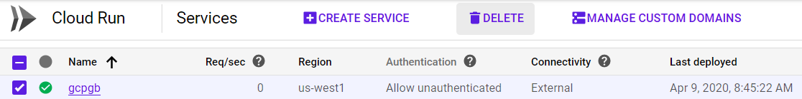
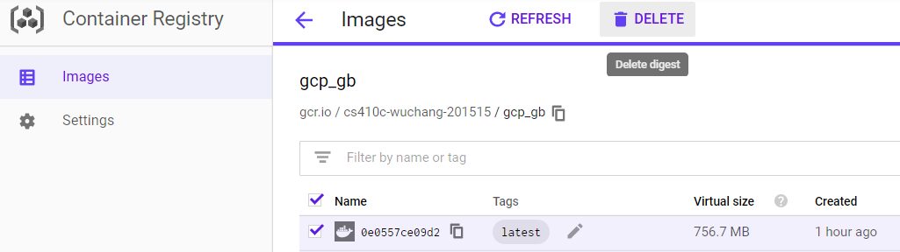

In this lab, we will deploy our guestbook application backed by Cloud Datastore to Cloud Run.
Cloud Run can run containers that are stored in public registries such as Docker Hub. However, we will use two hosted services on Google Cloud Platform that allows us to automatically build and store container imagest. The first service, Cloud Build, constructs container images when given an application's source files and a Dockerfile. The second service, Container Registry (gcr.io), is a hosted container registry that is equivalent to Docker Hub that stores the container images in a Cloud Storage bucket.
Bring up Cloud Shell and go back to the source directory for the application that was used in the initial Cloud Datastore Guestbook codelab.
cd cs430-src/05_gcp_datastore
In our initial docker container labs, we built the container via the docker CLI and pushed it to Docker Hub. In this lab, we'll instead build the container using Cloud Build and then push it to the gcr.io registry to host it. The command that does so is:
gcloud builds submit --timeout=900 --tag gcr.io/${GOOGLE_CLOUD_PROJECT}/gcp_gb
This command takes the Dockerfile and application source files in the current directory, uploads it to Cloud Build, instructs the service to build the container image, and then has the resulting container image stored in the project's private container registry using the image name gcp_gb.
We set the timeout value since this operation may take over the 10 minute default setting. The container will be identical to the one built in the initial Cloud Datastore codelab.
After executing the command, from the web console, visit the Cloud Build home page, click on History, then on the build you just executed. Scroll down to see that the docker command that Cloud Build has executed on your behalf resulted in the image being created.

To inspect the image that has been created, visit Container Registry.

Container Registry artifacts are stored in a specially named Cloud Storage bucket at gs://artifacts.${GOOGLE_CLOUD_PROJECT}.appspot.com. Visit the bucket and see where the image layers are stored via their SHA-256 hash.

In order to deploy a container on Cloud Run, you will need to specify a service account that the container will use to access cloud resources. With the Guestbook application, this means a service account with the Cloud Datastore User role attached. In the initial Cloud Datastore codelab, we have already created this service account.
guestbook@${GOOGLE_CLOUD_PROJECT}.iam.gserviceaccount.com
Given this service account and the container image in the previous step, we can now deploy our container serverlessly onto Cloud Run. To do so, run the following command:
gcloud run deploy gcp-gb \
--image gcr.io/${GOOGLE_CLOUD_PROJECT}/gcp_gb \
--service-account guestbook@${GOOGLE_CLOUD_PROJECT}.iam.gserviceaccount.com
One might wonder why we do not need to set the PORT environment variable as done with prior containers. As it turns out, Cloud Run automatically sets the environment variable in order to bring the container up on the appropriate port.
When prompted, specify:
Cloud Run (fully managed)us-west1 regionAllow unauthenticated accessUpon completion, an https URL will be returned where your container can be accessed from. Click on it or copy and paste it into a browser.
Add an entry with the message "Hello Cloud Run!". Show your Guestbook app running in a browser.

From the web console, visit Cloud Run, click on the service you created, then click on "Revisions". As the UI shows, one can create multiple revisions of a service and manage user traffic between them. This is helpful for A/B testing.
View the "Details" section to the right and answer the following questions:
Although Cloud Run has a generous free tier, it is good practice to remove resources that are not being used. Go back to the Cloud Run landing page and delete the service you've created:

Then, visit Container Registry and delete the container image:

Alternatively, you can also delete these resources in Cloud Shell via:
gcloud run services delete gcp-gb
gcloud container images delete gcr.io/${GOOGLE_CLOUD_PROJECT}/gcp_gb